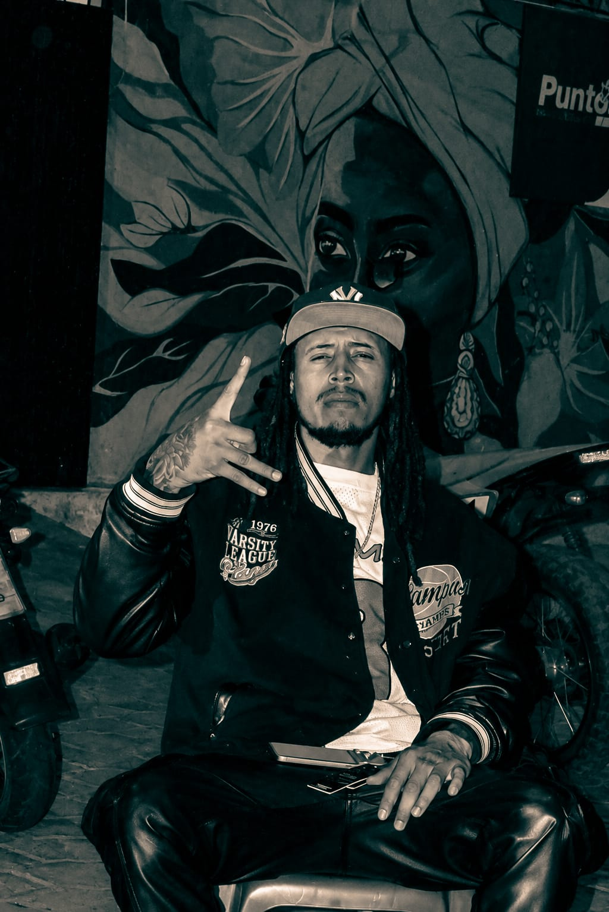
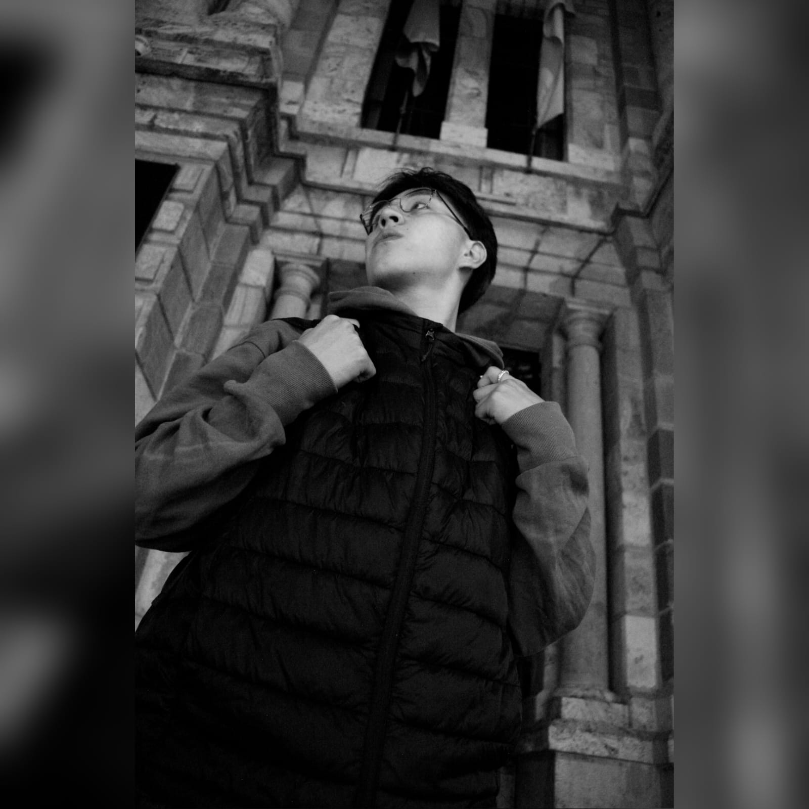

Fotografía Profesional
Captura de momentos y creación de imágenes con enfoque creativo, técnico y narrativo para diferentes tipos de proyectos.
Cada proyecto es una historia; mi trabajo es hacerla inolvidable.
Ver proyectos
Soy Zaid Almeida, estudiante de Multimedia y Producción Audiovisual, apasionado por la creación de contenido visual que conecta con las personas y transmite historias de manera auténtica. Mi trabajo combina creatividad, técnica y atención al detalle para desarrollar proyectos de fotografía, video y diseño con un enfoque profesional.
Busco transformar ideas en experiencias visuales memorables, aportando soluciones creativas que ayuden a marcas, artistas y emprendedores a destacar en un entorno cada vez más visual y competitivo. Cada proyecto representa una oportunidad para innovar, comunicar y generar impacto a través del lenguaje audiovisual.

Captura de momentos y creación de imágenes con enfoque creativo, técnico y narrativo para diferentes tipos de proyectos.

Desarrollo de piezas visuales enfocadas en comunicación efectiva, identidad visual y contenido para medios digitales.
Producción y edición de contenido audiovisual orientado a contar historias, transmitir emociones y generar impacto visual.
Estoy listo para transformar tus ideas en contenido visual de alto impacto. Ya sea fotografía, producción audiovisual, edición de video o contenido para redes sociales, trabajemos juntos para crear proyectos que conecten con tu audiencia, fortalezcan tu imagen y hagan destacar tu marca.